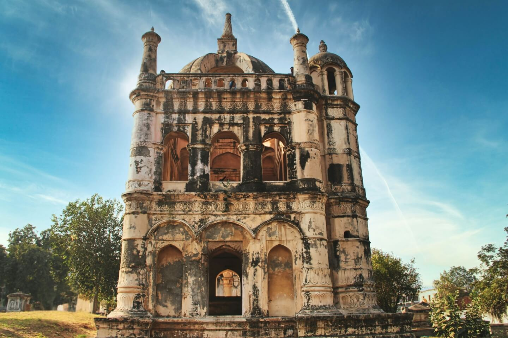
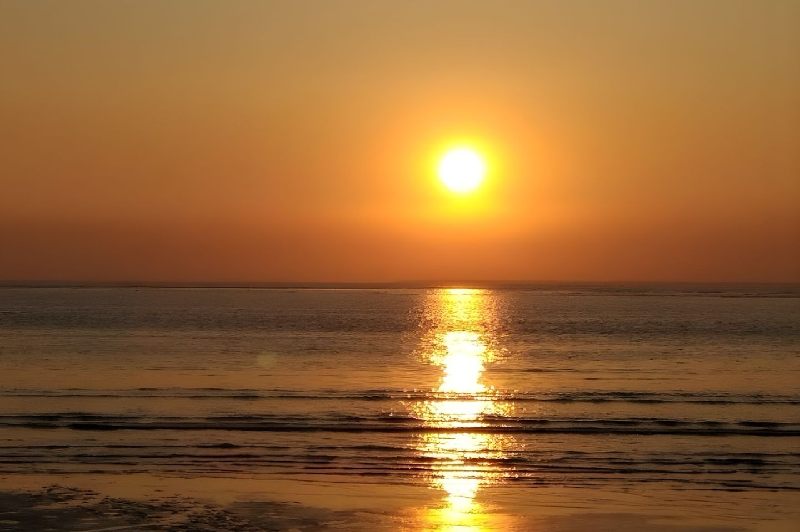
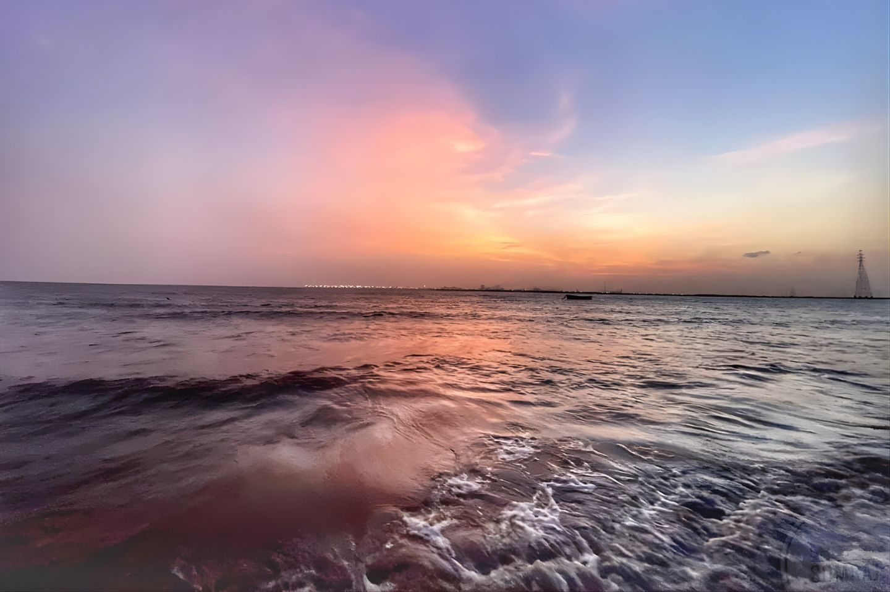

Surat, the diamond city of Gujarat, sparkles along the banks of the Tapi River. This commercial powerhouse has evolved from a historic trading port into a vibrant metropolis that processes 90% of the world's diamonds. It's also a hub for the textile trade. And beneath its glittering modern exterior lies a city rich in cultural heritage.

Located along the Arabian Sea, Dumas beach is situated around 21 kilometers southwest of Surat. The beach is widely popular among tourists and locals but only during the day. The beach located at the mouth of the River Mandola and Tapi offers scenic beauty but unlike other beaches of India, it has black sand and an eerie vibe. The black color of the sand is attributed to the high concentration of iron. The beach is also considered among the most haunted places in India due to widely reported paranormal activities. The beach is teeming with visitors until sundown and is deserted after that. Visitors have claimed sighting apparitions and orbs or hearing strange sounds and laughter on the beach. People roaming the beach after dark have been reported to go missing or found dead under unexplainable circumstances.

Hajira Village is a charming town located by the Arabian Sea. It is around 20 kilometers away from Surat in the Chorasi Tehsil of the district. Sporting shallow waters, the town hosts a major shipping port of India, owing to its connectivity with the Arabian Sea via the Gulf of Khambhat and the Persian Gulf.